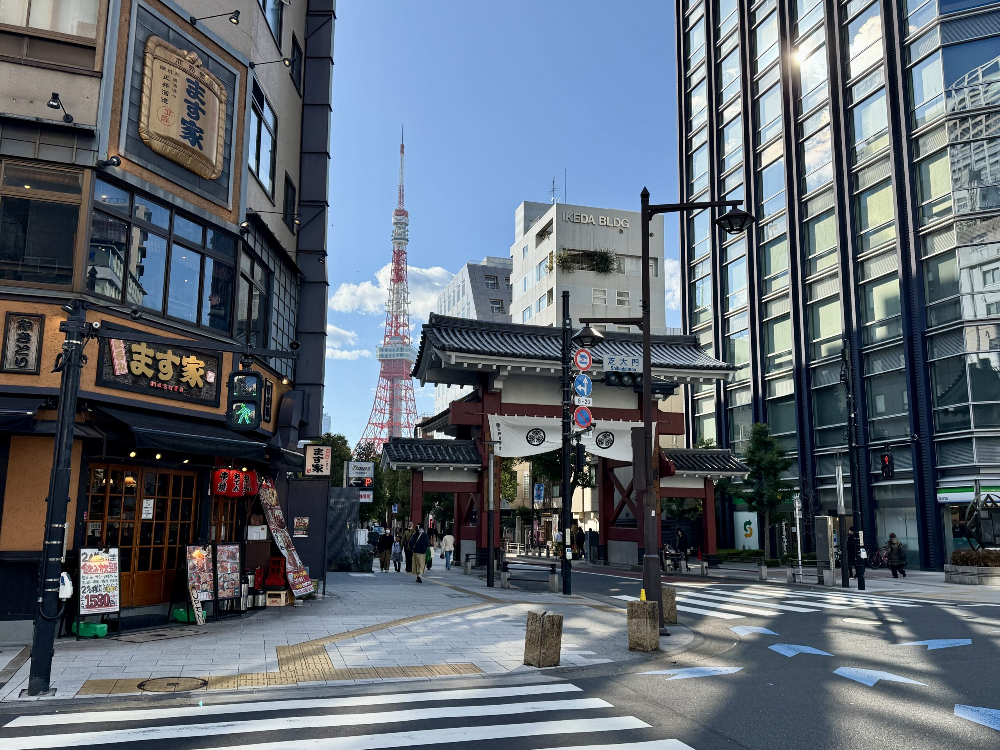

教育理念

1962年の開校以来、
多国籍かつ多くの留学生を
輩出してきました。
長年培ってきた日本語教育を
基盤としながらも、
時代のニーズに合わせた授業が
本校の特徴です。

Recruitment
常勤講師・非常勤講師募集
■職種と募集人数 職種:常勤講師・非常勤講師 人数:常勤講師 若干名 非常勤講師 若干名 ■募集条件 ・留学生の成長を楽しみ、日本での生活にサポートの意欲がある方 ・大学・大学院を卒業して下記の1～4いずれかに該当する方 １ 大学・大学院で日本語教育を専攻 または副専攻として修了 ２ 4年制大学卒業で420時間以上の 日本語教師養成研修修了（文化庁受理講座） ３ 日本語教育能力検定試験に合格 ４ 登録日本語教員有資格者 ■応募方法 履歴書・職務経歴書を以下アドレスまでメールにてご送付ください。 soumu@tjlc.jp ■応募方法募集締切日 2025/9/30
住 所 〒１０４−００１２ 東京都港区芝大門１−２−２２ 最寄駅：都営地下鉄三田線 御成門（おなりもん）駅 徒歩５分 都営地下鉄浅草線 大門（だいもん）駅 徒歩５分 JR山手線 浜松町（はままつちょう）駅 徒歩１０分